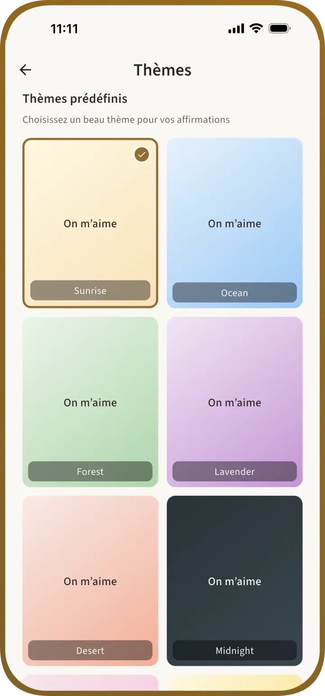

Manna.
Recueillez Votre Vérité Quotidienne.
Intégrez des affirmations bibliques à la prière et à la méditation. Gardez la vérité de Dieu près de vous dans les moments de doute ou de fatigue.
La Pratique
Que sont les affirmations chrétiennes ?
Les affirmations chrétiennes vous aident à retrouver la Parole de Dieu lorsque la journée devient agitée ou incertaine. Manna réunit des affirmations bibliques dans une pratique courte, centrée sur la foi, l’espérance, la paix et votre identité en Christ.
« Je suis une créature merveilleuse. »
Psaume 139:14« Je peux tout par celui qui me fortifie. »
Philippiens 4:13« Dieu ne nous a pas donné un esprit de peur, mais de force, d’amour et de sagesse. »
2 Timothée 1:7Chaque phrase s’appuie sur la vérité biblique. Les affirmations bibliques offrent un point de repère quand l’anxiété, le deuil, la pression ou le doute rendent les promesses de Dieu plus difficiles à retenir.
« Ne vous conformez pas au monde présent, mais soyez transformés par le renouvellement de l’intelligence. »
Romains 12:2
L’Application
Les promesses de Dieu, magnifiquement présentées.
Choisissez les heures de rappel qui correspondent à votre routine et ajoutez un widget pour garder une phrase importante sous les yeux.
Des affirmations bibliques quotidiennes
La foi pour chaque saison
Pratiquez sans vous presser

Thèmes
Fonctionnalités
Une pratique quotidienne, pas une application de plus.
Des affirmations bibliques quotidiennes
Créez un rythme avec des affirmations quotidiennes et des affirmations chrétiennes.
La foi pour chaque saison
Chaque phrase s’appuie sur la vérité biblique.
Pratiquer
Le mode pratique ouvre un espace de méditation chrétienne autour de la Parole de Dieu.
Thèmes
Personnalisez votre expérience.
Rappels
Choisissez les heures de rappel qui correspondent à votre routine et ajoutez un widget pour garder une phrase importante sous les yeux.
Affirmations Personnelles
Personnalisez votre expérience.
Pourquoi Manna
Une vérité renouvelée chaque matin.
Une pratique qui transforme.
Enracinées dans les Écritures
Chaque phrase s’appuie sur la vérité biblique.
Renouvelez Votre Esprit Chaque Jour
Créez un rythme avec des affirmations quotidiennes et des affirmations chrétiennes.
Bâtissez une Foi Inébranlable
Le mode pratique ouvre un espace de méditation chrétienne autour de la Parole de Dieu.
Belle et Sans Distractions
La bibliothèque intégrée fonctionne hors ligne et aucun compte n’est requis. Vos données personnelles restent sur votre appareil.
Votre manne quotidienne vous attend.
Recueillez Votre Vérité Quotidienne.